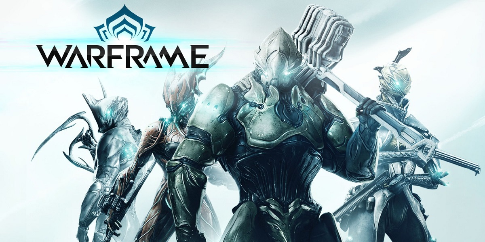
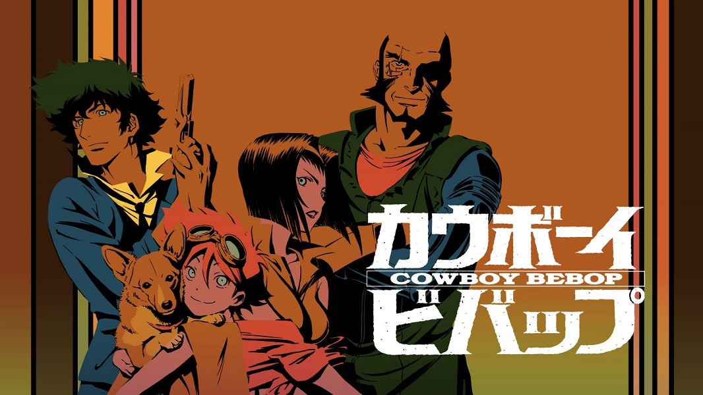
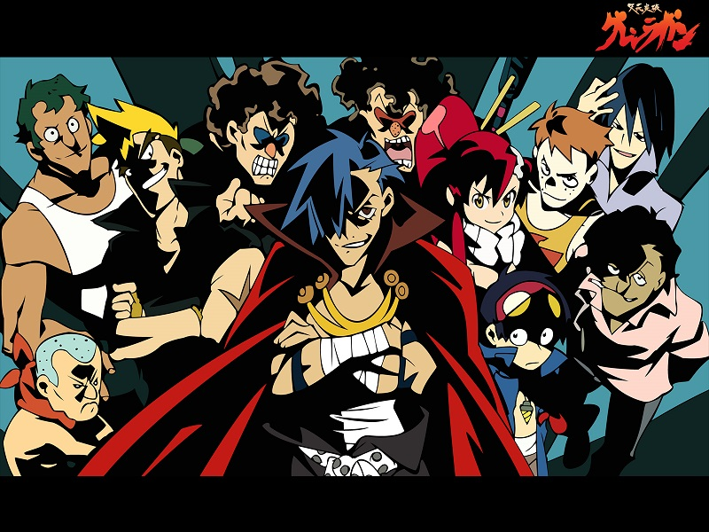
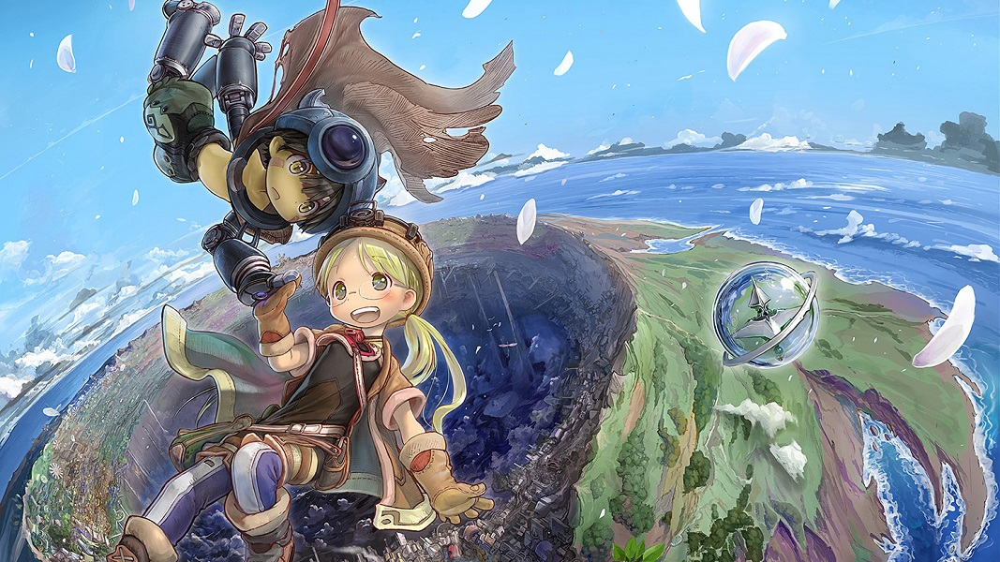

.jpg)
Серегин Максим
Я ученик 35 школы 11 класса
мне 17 лет
Мои хобби
Виртуальные игры
Warframe
Warframe — кооперативная компьютерная игра в жанре шутера от третьего лица, разработанная и выпущенная канадской студией Digital Extremes для платформ Microsoft Windows, PlayStation 4 и Xbox One. Разработкой версии игры для Nintendo Switch занимается компания Panic Button. Действие Warframe происходит в вымышленной научно-фантастической вселенной, в которой несколько сторон соперничают за власть над Солнечной системой. Игроки принимают на себя роли Тэнно — древних воинов, использующих в сражениях дистанционно управляемые тела-«варфреймы» с разнообразным оружием и способностями. Геймплей Warframe сочетает в себе бои со стрельбой и использованием холодного оружия, паркур и также включает в себя элементы компьютерных ролевых игр — игрок постоянно улучшает снаряжение своего персонажа.
League of Legends

League of Legends, сокращённо LoL — ролевая видеоигра с элементами стратегии в реальном времени, разработанная и выпущенная компанией Riot Games 27 октября 2009 года для платформ Microsoft Windows и Apple Macintosh. Игра распространяется по модели free-to-play.
Аниме
Ковбой бибоп
Бывший полицейский Джет Блэк и человек с тёмным прошлым Спайк Шпигель совершенно не планировали увеличивать экипаж космического корабля «Бибоп», являющегося для них домом и средством передвижения. Но сети, раскинутые для поимки дорогостоящих отбросов общества, принесли им Фэй Валентайн — очаровательную картёжницу с колоссальным долгом, Эд — потерявшуюся компьютерную умницу и Эйн — предположительно, самую умную собаку на свете. Именно в таком составе экипаж Бибопа и продолжает своё дело — охоту за головами.
Гурен-Лаган
Главные герои пытаются распрощаться с родной подземной деревушкой, чтобы наконец-то увидеть, что происходит снаружи. В определенный момент судьба решает преподнести Симону и Камине сюрприз в виде долгожданной возможности реализовать заветное желание. Парень обнаруживает ключ и небольшого робота. При помощи ключика она заводит маленького андроида, которому он дает имя Лаганн. Вскоре к немногочисленной группировке подключается Ёко – девчушка из поселения Ритона, давно планирующая ликвидировать ганмен – особую боевую машину. Так начинаются невероятно захватывающие приключения.
Настоящая причина обитания людей в подземелье – далеко не неблагоприятная обстановка, а суровый контроль цивилизации. Оказывается, беспощадный монарх, применяя помесей людей и зверей, стремительно избавляется от имеющихся излишек народа, а также наглецов, появившихся на поверхности. Тираничный правитель следит за численностью, чтобы не начал действовать механизм, способный убить абсолютно всех обитателей планеты. Главные герои принимают решение восстать против бесчеловечной системы. Они обзаводятся соратниками, которые тоже готовы к борьбе за свободу.
Созданные в бездне
12-летня Рико никогда не знала родную маму, проходя все этапы взросления в детском приюте. Десятилетие назад женщина, известная как Лайза-Уничтожительница бесследно пропала, когда спустилась в бездонный кратер, расположенный посреди острова. Именно так здешние жители города Орф зарабатывают деньги на хлеб – изучают и вытаскивают из расщелины на поверхность магические артефакты. Никто не знает, как и когда образовалась воронка, диаметром в километр. Многие убеждены, что причиной ее возникновения является высокоразвитая цивилизация, существовавшая на планете тысячи лет назад.
Кратер таит в себе множество тайн и опасностей. Смельчаки, решившие исследовать нижние ярусы рискуют остаться там навсегда. По неизвестной причине это место негативно влияет на человеческий организм, и при долгом пребывании там, вызывает тошноту и головокружение. Чтобы избежать случайных жертв, была сформирована специальная команда исследователей, именуемых «свистками», на регулярной основе совершающих вылазки в пропасть. До недавних пор люди вытаскивали наружу неработающий хлам, но главной героине удалось обнаружить человекообразного робота Рега. Он напоминал живого мальчика, выполненного из крепкого сплава, вооруженного лазерными пушками. Имея провалы в памяти, киборг располагал обрывистой информации о Лайзе, что подарило Рико надежду встретить маму живой.
Хочу стать фронтенд разработчиком
Front-end разработка — это создание клиентской части сайта. Front-end разработчик занимается версткой шаблона сайта и созданием пользовательского интерфейса. Обычно front-end разработчик — это мастер на все руки. Он просто обязан обладать талантом дизайнера, быть искусным верстальщиком и хорошим программистом.
Современный front-end developer должен легко владеть html5, css3, JavaScript (и как минимум JQuery).